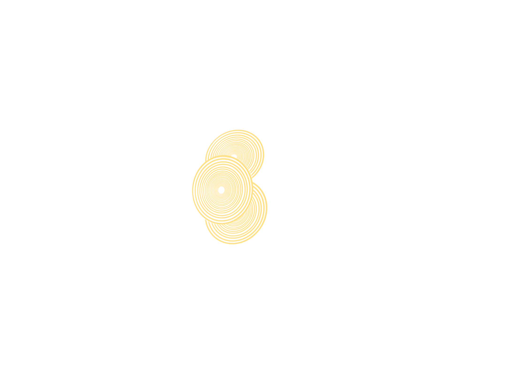
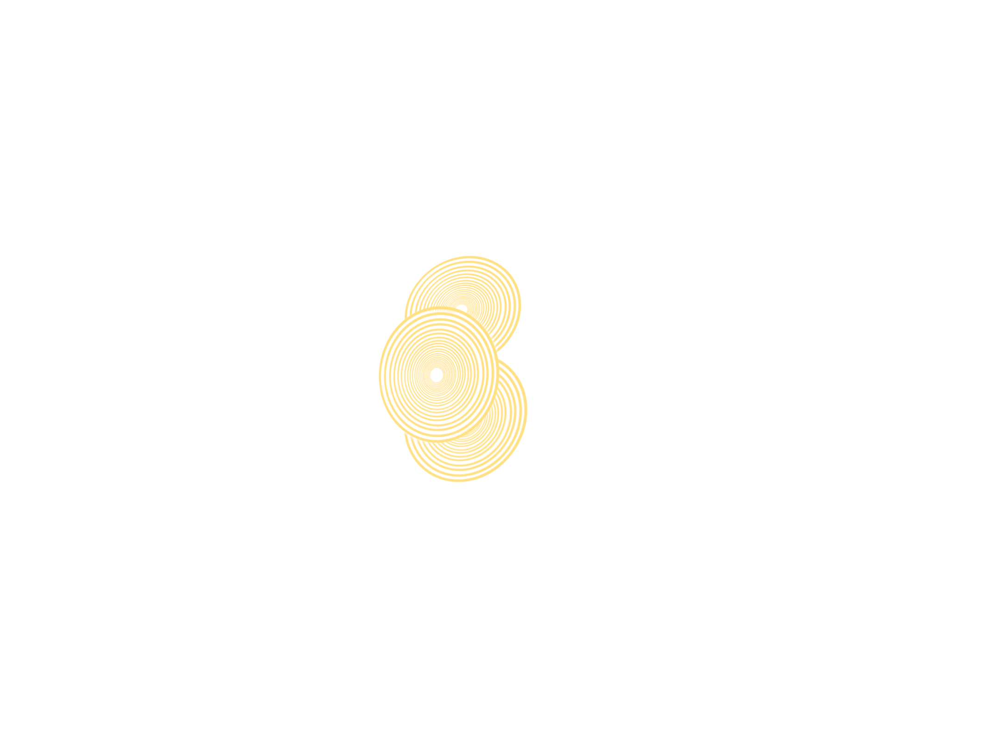
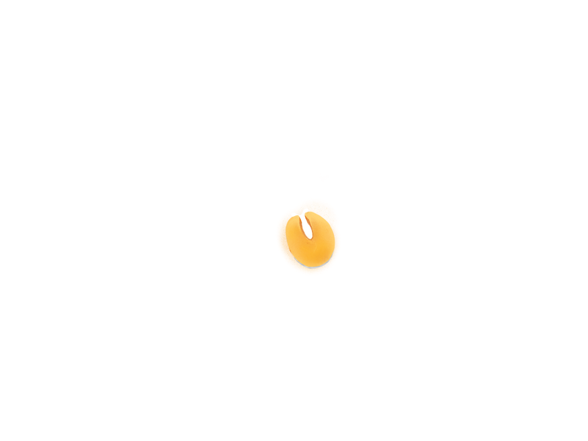
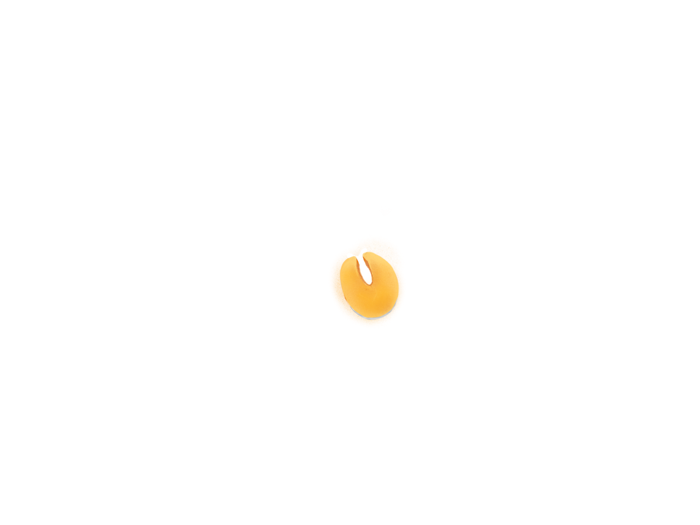

Primeiro, vamos olhar para uma alimentação considerada ideal pelo Guia alimentar para a população brasileira (2014). O documento traz exemplos de refeições saudáveis e suficientes para uma alimentação de qualidade, baseados em ingredientes que fazem parte da vida cotidiana dos brasileiros.
Um dos cafés da manhã sugeridos pelo guia inclui pão francês com manteiga, suco de laranja e mamão.
No almoço, não poderia faltar arroz com feijão, que vem acompanhado de bife grelhado, salada de tomate e salada de frutas para sobremesa.
O jantar é macarrão acompanhado de galeto e salada de folhas.
Repare que, além de fazer todas as refeições com variedade de alimentos, o brasileiro que consegue comer de forma parecida com o guia alimentar segue alguns princípios importantes.
Primeiro, alimentos in natura ou minimamente processados são a base da alimentação.
Há poucos alimentos processados, como pães e macarrão.
E gorduras e óleos, como a manteiga, são usados com moderação para tornar alimentos mais saborosos.
Além disso, alimentos ultraprocessados – coisas como salgadinhos de pacote e macarrão instantâneo — são evitados.
Com tudo isso, as refeições são diversas, com calorias provenientes de muitas fontes. A alimentação pode até ser simples, mas é farta e variada.
Agora, vamos comparar essas refeições com aquelas feitas por brasileiros reais, em situação de insegurança alimentar, registradas pelo IBGE.
O primeiro brasileiro faz a primeira refeição do dia é às 11h, com quatro bolachas salgadas e uma xícara de café.
O almoço acontece já na metade da tarde, às 16h: um prato de macarrão com salsicha.
No final da tarde, às 18h, o lanche é um prato de cuscuz paulista e um copo de café.
Na janta, às 23h, novamente macarrão com salsicha, dessa vez acompanhado de arroz branco.
Ainda que essa pessoa tenha feito todas as refeições em quantidade suficiente, é perceptível que existe uma monotonia, e que os pratos estão longe do ideal.
O excesso de comidas como pães e massas é frequente em famílias para as quais o preço de alimentos mais variados e in natura começa a ficar proibitivo.
Isso é reforçado pela presença solitária das salsichas junto ao macarrão — trata-se de um embutido ultraprocessado que é usado para substituir alternativas mais ricas como bife ou frango. Entre 1970 e 2003, as carnes embutidas cresceram sua presença na alimentação brasileira em 300%.
A presença de alimentos ultraprocessados pode ser ainda mais pervasiva. É o que vamos ver no próximo caso, nas refeições feitas por outro brasileiro em insegurança alimentar.
O dia começa às 7h com dois pães franceses e uma xícara de café.
Na metade da manhã, às 9h, há uma bala.
O almoço, às 12h, tem dois ovos de galinha e um pacote de macarrão instantâneo.
De noite, às 21h são três copos de refrigerante.
E, às 22h, no lugar do jantar, mais um bombom.
Nesse caso, a alimentação é quase integralmente feita de ultraprocessados. O consumo desse tipo de comida tem aumentado em todo o país nas últimas décadas. Biscoitos recheados, por exemplo, são quatro vezes mais comuns na alimentação brasileira hoje do que há 50 anos.
Aqui, também há clara escassez de comida. Durante a noite, o consumo de alimentos se resumiu a um bombom e refrigerante.
O próximo caso também revela escassez de alimentos, mas com uma configuração diferente.
Nesse caso, a primeira refeição é às 8h, com um pão francês e uma xícara de café.
No almoço, às 13h, são quatro colheres de arroz, duas de feijão e quatro pedaços de linguiça.
A última refeição do dia foi já às 17h: um único pedaço de melancia.
A falta de comida, aqui, também é evidente. Entretanto, os ultraprocessados não são tão frequentes — é o caso, apenas, da linguiça.
O restante, ainda que em pequenas quantidades e com pouca diversidade, não fica muito distante do que seria um prato saudável.
Esse exemplo mostra que ainda há, no Brasil, um legado alimentar saudável, por mais que o avanço de ultraprocessados seja constante. O que falta para a população em insegurança alimentar é renda e acesso – e, por parte dos governos, políticas públicas para garantir isso.
O último exemplo de refeições realça como o acesso a alimentos ainda é um problema significativo.
Aqui, o dia começa às 7h, com três pedaços de peixe e cinco colheres de farinha de mandioca.
Às 9h, no meio da manhã, o lanche tinha três bananas.
Ao meio dia, o almoço tem quatro pedaços de peixe e cinco colheres de farinha de mandioca.
Durante a tarde, às 16h, a comida foi um prato de caldo de peixe.
E, no jantar, às 19h, novamente quatro pedaços de peixe e cinco colheres de farinha de mandioca.
Apenas três tipos de alimento — banana, peixe e farinha de mandioca — são responsáveis por toda a nutrição desse brasileiro.
Esse tipo de monotonia alimentar já foi diagnosticado por Josué de Castro há 75 anos e ainda persiste no país.
Quando falamos do retorno da fome, estamos falando, sim, de pessoas que não tem absolutamente nada para comer.
Entretanto, também estamos falando de pessoas que não têm acesso adequado e garantido a alimentação de qualidade.
Quando a insegurança alimentar avança, mesas reais como as retratadas no Guia Alimentar brasileiro ficam cada vez mais raras.
 




 
